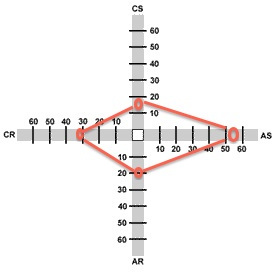

Clark Brain Think Like So

My Gregoric Thinking Style is Abstract Sequential
- Concrete Sequential: 16
- Abstract Sequential: 52
- Abstract Random: 20
- Concrete Random: 32
What does that even mean?
Let me explain by describing how I would most naturally expound the meaning of an abstract sequential thinking style. I would provide a theory of the meaning of an abstract sequential thinking style. That I would approach describing abstract sequentialism by providing a theory of the meaning of abstract sequentialism belies the fact that I, myself, am an abstract sequentialist thinker.
Abstract sequentialist thinkers like abstractions, generalizations, principles, theories, frameworks, and systems. They also like ordering their thought based on a "sequential" logical flow, i.e., their thought normally follows a general pattern that is described in the literature as sequential implication.
Further, abstract sequentialist thinkers usually have the following characteristics:
He likes his point to be heard. He likes analyzing situations before making a decision or acting and applying logic in solving or finding solutions to problems. She learns best when she has access to experts or reference materials, is placed in a stimulating environment, or is able to work alone. It tends to be hard for him to be forced to work with those of differing views, with too little time to deal with a subject thoroughly, repeating the same tasks over and over with lots of specific rules and regulations. Finally, she doesn't enjoy "sentimental thinking," expressing her emotions, being "diplomatic" when convincing others, or not monopolizing a conversation (source).
Though I don't necessarily buy that those generalizations obtain with any law-like regularity, I do think that they are helpful heuristics for awareness and regulation of one's thinking. So, how do I use my awareness of these heuristics to my advantage?
How do I use my Thinking Style as an Advantage at DBC?
First, I need to harness my penchant for analysis, logic, and theory before action, and exercise that penchant through pratical tools like pseudo code, modeling, whiteboarding, and other logic and resources. This will feed my need for analysis before making a decision on code solutions, while also channeling that need into productive outlets.
Because I learn best when I have access to experts, quality reference materials, and a stimulating environment, it makes sense to take advantage of all the experts at DBC, the expert-designed curriculum, and a fast-paced and communal environment.
What has been my Biggest Struggle so far in Phase 0 of DBC?
So far, my biggest struggle has been time management. This relates to the abstract sequentialist's desire to thoroughly engage with a topic before moving on to a new topic.
My Action Plan for Combating Struggles at DBC
By understanding this desire for "full understanding," possibly pathological, I can put external checks and balances in place to make sure that said desire stays within reason. For example, rigidly timeboxing and flexing scope but not time will help me "version" and be comfortable with high-level understanding on the first-pass.
My Action Plan for Expanding my Thinking Style
My action plan for expanding my thinking style while at DBC centers around my emotional intelligence (EQ) competencies. Abstract sequentialist thinkers supposedly struggle with EQ competencies more than the other thinking classifications, e.g., "it tends to be hard for him to be forced to work with those of differing views...she doesn't enjoy 'sentimental thinking,' expressing her emotions, being 'diplomatic' when convincing others, or not monopolizing a conversation." All of those difficulties that an abstract sequentialist thinker deals with are related to EQ competencies of self-awareness, self-regulation, empathy, and social skills.
This "area of opportunity" is an exciting differentiator that DBC offers relative to other software development bootcamps. I am not as worried about my intellectual abilities, which is why I am greatly excited to encounter DBC's engineering empathy curriculum while learning the technical skills to be able to build awesome things.

Makin' Stacks, Yo... Full-Stacks
I am a student at Dev Bootcamp in San Francisco, California. Born and raised in the San Francisco Bay Area. Educated at California Polytechnic State University, San Luis Obispo (physics and philosophy). Graduate education at the University of Chicago (metalogic and philosophy of science).
My partner in crime is named Fiddle -- She likes chasing lizards -- Her best friend (other than me) is named Banjo -- Say Hi!